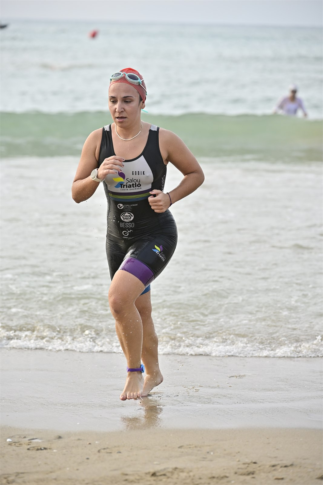
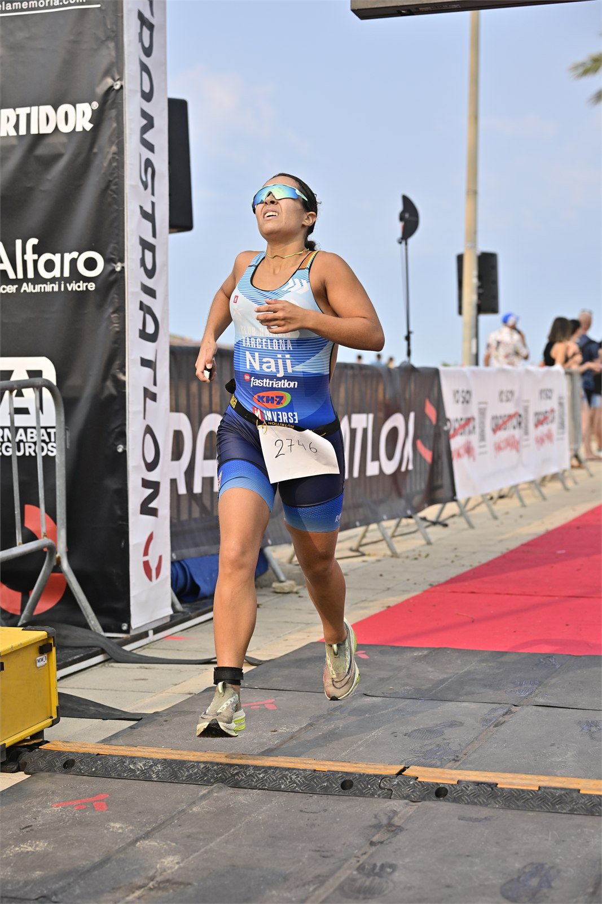

The 14th Cunit Aquathlon brought swimmers and runners to the Passeig Marítim in Cunit, Tarragona, on Sunday 26 July 2026. Organised by Club Deportivo Transtriatlón, the sprint started at 9:00am opposite Cunit railway station and counted towards the Copa Catalana and the Lliga de Clubs.

Paula Guerrero Rusiñol of Club Natació Sabadell won the women’s sprint in 36:29, ahead of Melissa Ruiz Grandin in 38:37 and Emmanuelle Grandin in 39:09. Marc Zaragoza Carballido of Club Triatló Cornellà won the men’s race in 31:36, just four seconds clear of Yago Sánchez Costa, with Robert Budai third in 31:57.
The ninth Cunit Youth Aquathlon followed with a 300-metre swim and 2-kilometre run for infant, cadet and youth categories. The age-group winners included Roger Arias Solé and Cristina García Morea in the youth races, Mael García Durager and Daniela Estornell Pradell in the cadet races, and Leo Gomis García and Laia Perna Buzon in the infant races.

This event was covered for Image Media by correspondent José Ramón Moreno.